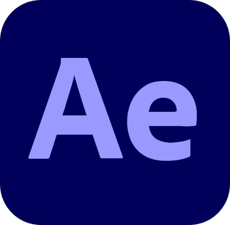
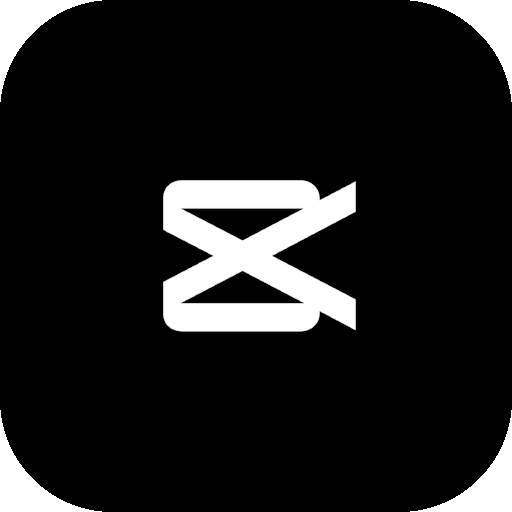
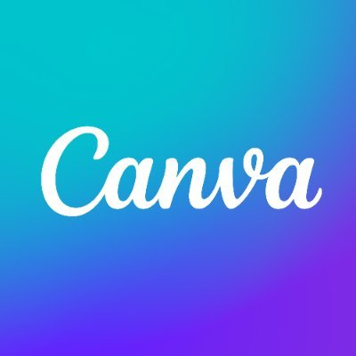
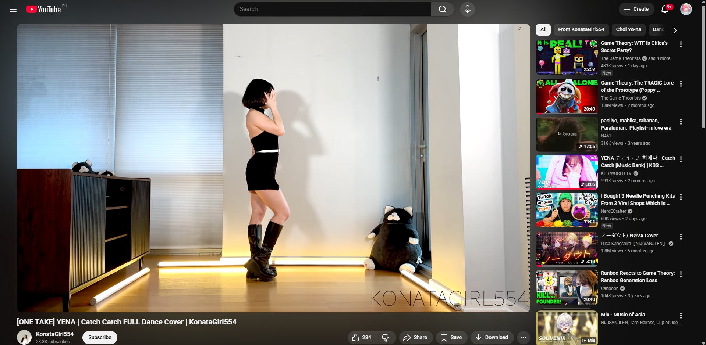
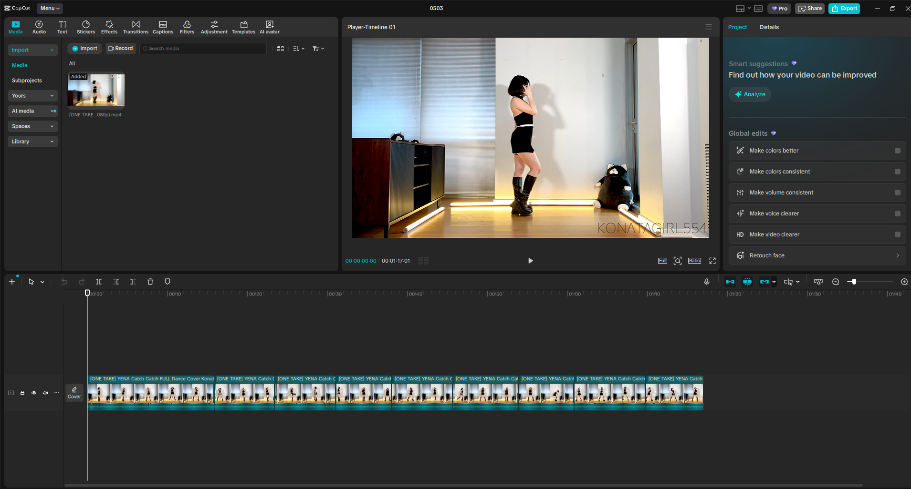
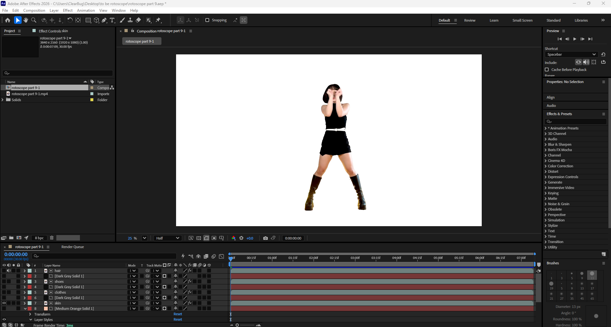
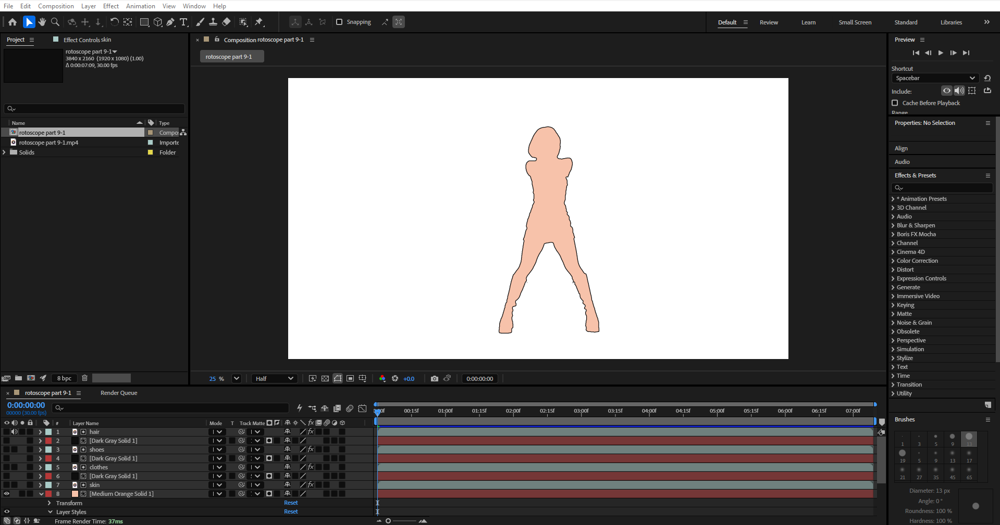
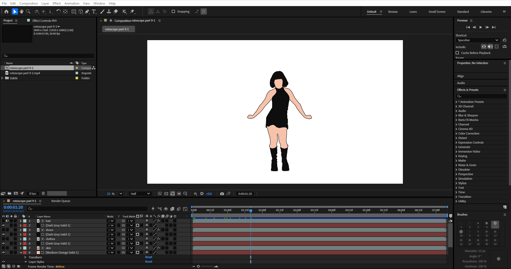
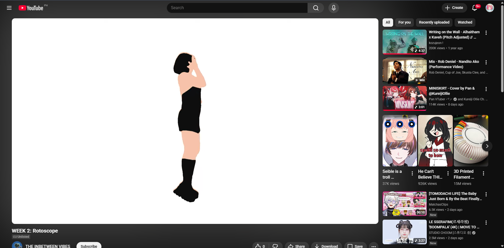

Choose Your Source Footage
Select a video clip with clear, well-lit movement. Short, deliberate actions like dancing or walking work best — even 5–10 seconds is plenty to start.
Animation Project
Frame by frame, life becomes animation — tracing the human form into something both real and surreal.
About the Project
Rotoscoping is the art of tracing over live-action footage, frame by frame, to create fluid and lifelike animation. This project challenged us to slow down, observe deeply, and find beauty in the smallest movement — the arc of an arm, the shift of weight in a step. Over twelve weeks, we documented every stage of the process.
Behind the Work

Adobe After Effects
The primary tool for frame-by-frame rotoscoping — used to trace, animate, and composite every movement with precision and fluidity.

CapCut
Used for quick video editing and trimming footage into manageable segments, as well as adding transitions and final polish to weekly progress clips.

Canva
Utilized for designing visual layouts, thumbnails, and graphic elements that support the overall aesthetic and branding of the project.
The Process

Choose Your Source Footage
Select a video clip with clear, well-lit movement. Short, deliberate actions like dancing or walking work best — even 5–10 seconds is plenty to start.

Break the Footage into Segments
Cut your footage into short 5–10 second clips. This keeps the process manageable and helps maintain consistency in style across the whole animation.

Trace Frame by Frame
Using After Effects, carefully trace the subject's outline on each frame. Focus on the essential lines that define the movement rather than every small detail.

Apply Color and Style
Fill your outlines with color, gradients, or textures. Choose a consistent palette and visual style that carries through the entire piece.

Add Transitions and Effects
Smooth transitions between keyframes and add backgrounds or motion graphics. CapCut is great for assembling these finishing touches quickly.

Export and Review
Export your animation and watch it back in full. Fix any jumpy frames, then share your work — a testament to patience and careful observation.
FINAL VIDEO
PLACEHOLDER
Documentation

WEEK 1: PICKING THE VIDEO

WEEK 2: FIRST 10 SECONDS

WEEK 3:

WEEK 4:

WEEK 5:

WEEK 6:

WEEK 7:

WEEK 8:

WEEK 9:

WEEK 10:

WEEK 11: FINAL VIDEO